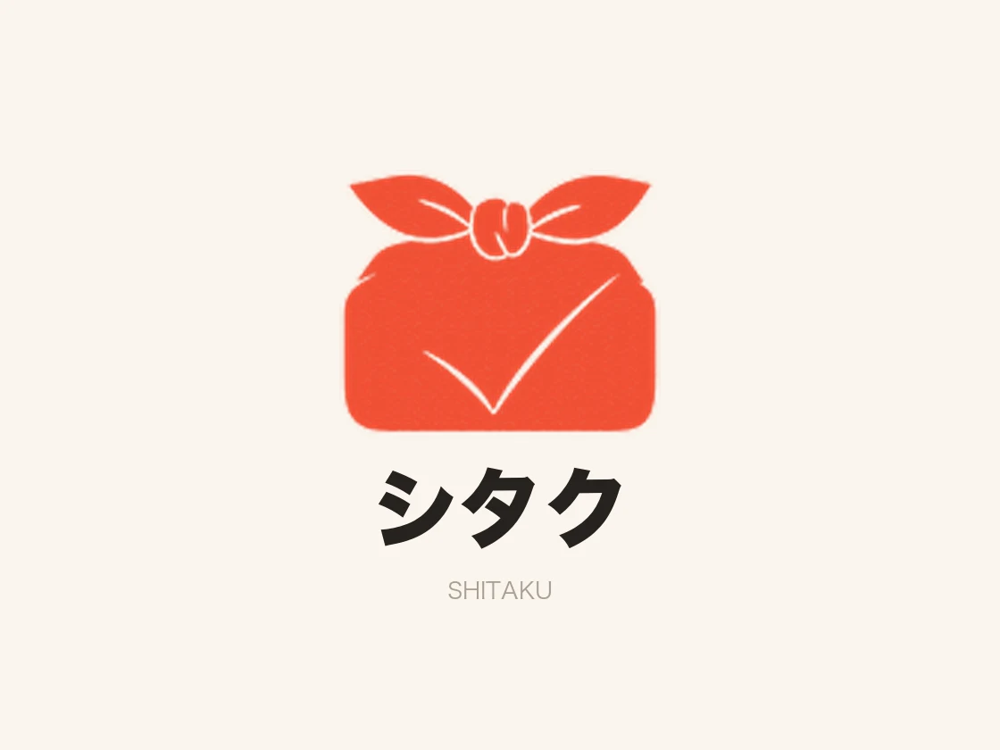
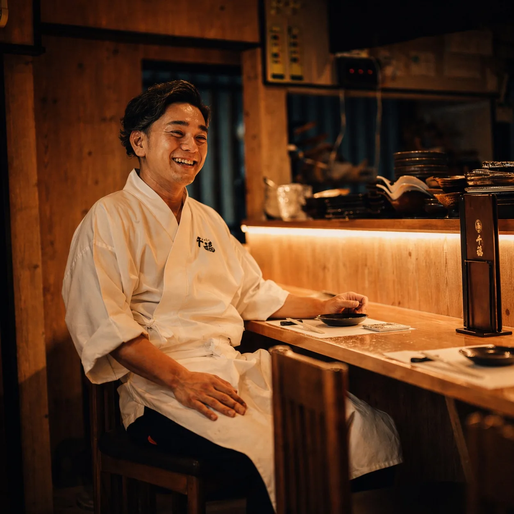
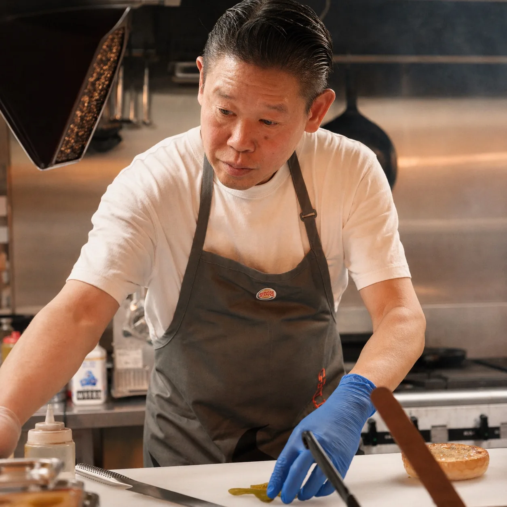
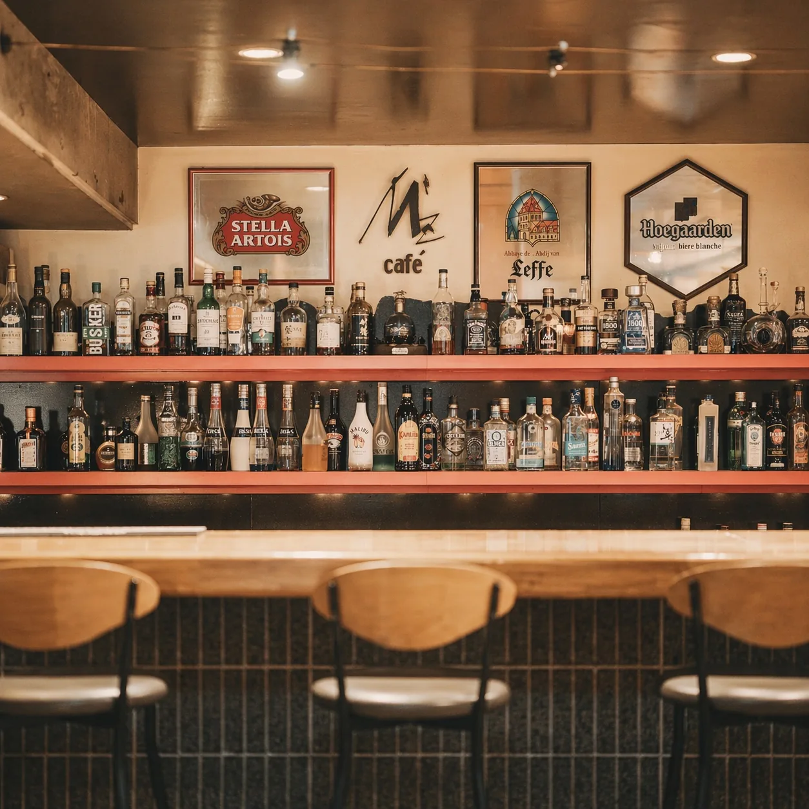

群馬の中小企業・飲食店の経営者へ
その悩みを、
次の一歩に。
集客も、現場も、経営の判断も。
ひとりで抱えず、一緒に整理しませんか。
TOMOSU.は、考える・作る・回すまで伴走する地域ビジネスの相談相手です。
初回60分無料 · オンライン全国対応

WHERE TO START
「何から変えよう」を、
一緒に見つける。
課題がまとまっていなくても、大丈夫。
いま気になっていることからお聞かせください。
経営の距離に合わせて、
伴走のかたちと、置いていく道具。
顧問コンサルティング
Advisory Retainer月次・週次で経営の隣に立ち、意思決定と実行をともに。孤独な判断を、灯りのあるものに変える基幹サービスです。
- 経営戦略01
- ブランド構築02
- SNS戦略03
- 人事・組織04
- IT・DX05
プロジェクト型支援
Project-based単発の制作・構築プロジェクト。「作る」だけで終わらせず、「回る」ところまで一貫して設計します。
- HP制作01
- ブランドデザイン一式02
- 地域コンテンツ制作03
- 業務マニュアル整備04
スポット相談
Spot Consultation
シタク
SHITAKU — Event Booth Appイベント出店の準備から当日、振り返りまでをスマホ1台に。売れた数をその場で数え、原価と粗利まで自動で出します。相談ではなく、置いていける道具として。
- 売上をその場で記録01
- 複数の売り場で共有02
- 発注量の自動計算03
- 配置図・担当表の印刷04
- 粗利と振り返り05
考える・作る・回すを、一人で完結できる。
十年の飲食経営実体験から生まれた、伴走力です。
伴走してきた、
経営者の声。

チェックシステムをWebアプリで作ってもらってから、現場の確認作業が劇的に変わりました。月一の定例では在庫管理や人事評価制度の導入まで相談できて、「こういうの欲しかった」がそのまま形になる。開発から保守まで一貫して見てもらえる安心感は大きいです。

メニューや販促物のデザインはほぼお任せしていて、週一で店長代理として現場にも入ってもらっています。デザインだけ・相談だけじゃなく、実際にホールに立つ人が店舗運営の顧問をしてくれる。この距離感は他にないと思います。

弁当製造の調理を任せられるだけでも助かっているのに、大型イベントの出店までサポートしてもらっています。先日の肉フェスでは二日間で約300万円の売上を達成。調理スタッフの配置からオペレーション、レイアウトまで一緒に設計してもらえたからこその結果です。

SNS運用を丸ごとお願いしていて、月2回は店舗に来てスタッフと直接やり取りしてくれる。現場の空気を知っている人が発信するから、投稿に嘘がない。お客様からも「Instagramを見て来ました」という声が増えました。

Webサイト制作のサポートに加えて、地域活性化につながる地図の制作やデータ入力まで柔軟に対応してくれる。こちらの「やりたい」をそのまま受け止めて、実務レベルで手を動かしてくれるのが本当にありがたいです。
LET’S TALK
まだ、答えがなくても。
話すことから始めましょう。
初回60分で、現状と気になっていることを一緒に整理します。
無理な勧誘はありません。

現場で、経営のすべてを背負った
人間だからこそ、伴走できる。
群馬県高崎市を拠点に、中小企業・スタートアップ・地方自治体・個人事業主・ 大企業の部門責任者まで、「経営の灯り」を必要とする方に伴走しています。
栄養士としての食の素養、営業職での提案力、調理責任者としての現場統率、 そしてTIN'z 代表としての9年・3ブランド経営。 机上で語られる戦略も、現場で磨かれた運営も、どちらも実体験から語れます。

まずは、
話を聞かせてください。
初回ヒアリングは無料60分。合わないと判断すれば、
正直にそう申し上げます。
初回ヒアリング
現状・課題・目指す姿を、じっくり伺います。押し売りは一切ありません。
現状分析・簡易レポート
ヒアリングをもとに、現状整理と論点を簡易レポートで可視化します。
提案・見積
最適な支援レイヤー（顧問 / プロジェクト / スポット）をご提案します。
契約・キックオフ
合意後に契約。初月のゴール設定とロードマップを明確化します。
月次 / 週次で伴走支援
定例で論点整理・実行・振り返り。孤独な意思決定を、伴走で支えます。
BEFORE WE MEET
相談する前に。
何を相談するか、まだ決まっていません。
「集客が気になる」「現場が回らない」といった、いま感じていることをお話しください。現状を整理するところからご一緒します。
初回相談は無料ですか？
初回60分のヒアリングは無料です。有料のスポット相談は、個別の課題について現状整理や意思決定の助言を行うサービスです。継続的な支援や制作が必要な場合は、内容とお見積もりをご提案し、合意後に契約となります。
群馬以外からも相談できますか？
はい。対面は群馬県を中心に関東全域、オンラインでは全国のご相談に対応しています。
単発の相談や、制作だけでも依頼できますか？
スポット相談（1時間10,000円〜）や、Web制作・ブランドデザインなどのプロジェクト型支援もあります。まずはご希望をお聞かせください。
最初の一歩は、
六十分の対話から。
初回ヒアリングは無料です。「まだ課題がはっきりしていない」段階でも構いません。 現状を整理し、TOMOSU. がお役に立てるか・立てないかを、フラットに考えるところから始めましょう。